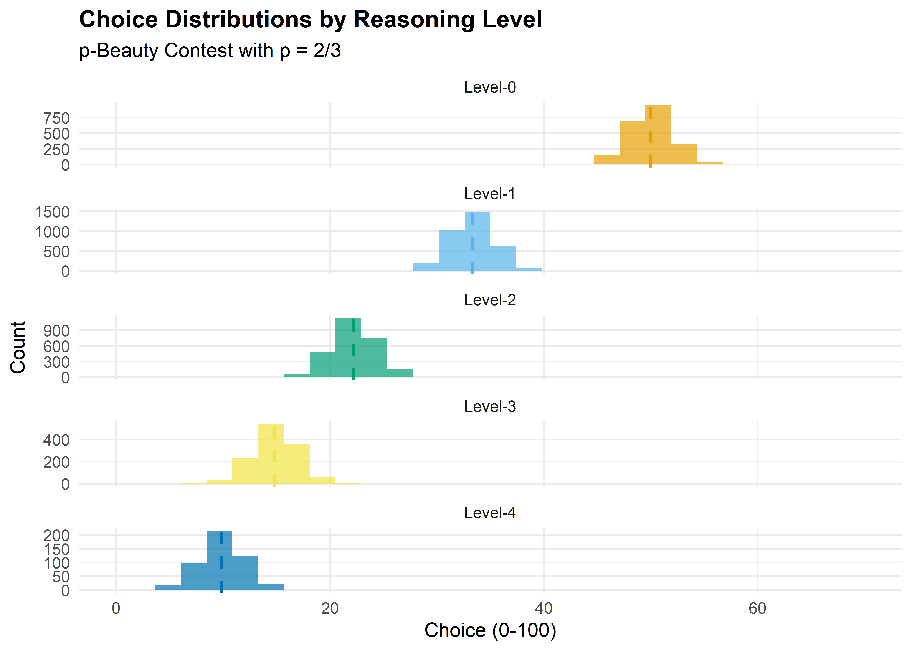
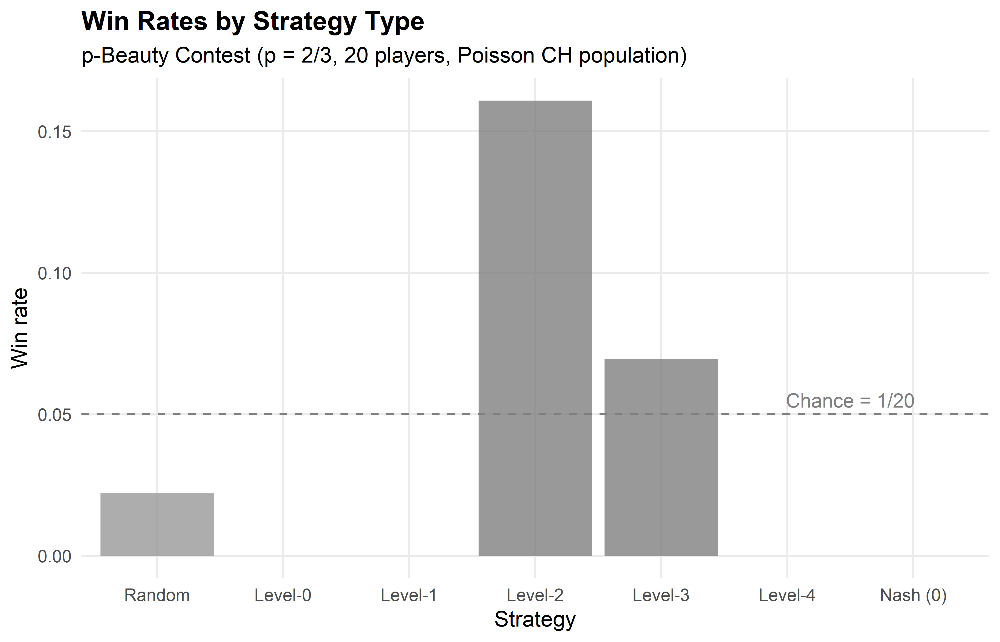

beauty_contest <- function(n_players = 20, p = 2/3, tau = 1.5,
level_distribution = NULL) {
if (is.null(level_distribution)) {
# Poisson cognitive hierarchy
max_level <- 5
levels <- 0:max_level
probs <- dpois(levels, lambda = tau)
probs <- probs / sum(probs)
player_levels <- sample(levels, n_players, replace = TRUE, prob = probs)
} else {
player_levels <- sample(names(level_distribution), n_players,
replace = TRUE, prob = level_distribution)
player_levels <- as.integer(player_levels)
}
# Compute level-k choices
level_choice <- function(k, p) {
# Level-0: uniform random -> expected value = 50
# Level-k: best respond to level-(k-1)
if (k == 0) return(50)
50 * p^k
}
choices <- sapply(player_levels, level_choice, p = p)
# Add small noise for realism
choices <- pmax(0, pmin(100, choices + rnorm(n_players, 0, 2)))
tibble(
player = seq_len(n_players),
level = player_levels,
choice = choices
)
}32 LLM Agents and Strategic Reasoning
Abstract
Large language models as game-playing agents: level-k reasoning, cognitive hierarchy theory, bounded rationality, and simulated beauty contest experiments in R.
Keywords
LLM, language model, agents, strategic reasoning, level-k, cognitive hierarchy
33 LLM Agents and Strategy
Learning objectives
- Describe how LLMs can serve as game-playing agents and the challenges of evaluating their strategic sophistication.
- Explain level-k reasoning and cognitive hierarchy theory as models of bounded rationality.
- Simulate a p-beauty contest with level-0 through level-3 players in R.
- Compare the strategic performance of different reasoning levels against Nash equilibrium predictions.
33.1 Motivation
Large language models (LLMs) have shown surprising abilities in strategic settings. When prompted to play matrix games or auction settings, LLMs exhibit behavior that resembles — but does not perfectly match — game-theoretic rationality. Do they compute Nash equilibria? Do they reason about opponents? Or do they pattern-match from training data?
These questions connect directly to a long tradition in behavioral game theory: humans also deviate from Nash equilibrium in systematic ways. The level-k model (Stahl & Wilson, 1995) and cognitive hierarchy theory (Camerer et al., 2004) were developed to explain human strategic behavior. These same frameworks provide a lens for understanding LLM agents.
This chapter is more conceptual than implementation-heavy, since we cannot call LLM APIs from our R setup. Instead, we build the theoretical framework and simulate the models that researchers use to evaluate strategic sophistication in both humans and AI agents.
33.2 Theory
33.2.1 LLMs as game-playing agents
An LLM can play a game when given a natural-language description of the rules, payoffs, and its role. The “strategy” emerges from the model’s text generation process rather than from explicit optimization. Several empirical findings have emerged:
- Matrix games: LLMs often cooperate in Prisoner’s Dilemma variants at rates similar to human subjects, but their behavior is sensitive to framing effects (how the game is described).
- Coordination games: LLMs can coordinate on focal points, suggesting they leverage the same cultural knowledge that helps humans coordinate.
- Auctions and bargaining: LLMs show varying degrees of strategic sophistication, sometimes overbidding or underbidding relative to equilibrium predictions.
33.2.2 Level-k reasoning
The level-k model posits that players differ in their depth of strategic reasoning:
- Level-0 (\(L_0\)): Plays uniformly at random (or according to some non-strategic rule).
- Level-1 (\(L_1\)): Best-responds to a level-0 opponent.
- Level-2 (\(L_2\)): Best-responds to a level-1 opponent.
- Level-k (\(L_k\)): Best-responds to a level-\((k-1)\) opponent.
Each level assumes the opponent is exactly one level below. This anchored reasoning chain was proposed by Stahl & Wilson (1995) and contrasts with Nash equilibrium, which requires players to reason about opponents of the same sophistication level.
33.2.3 Cognitive hierarchy
The cognitive hierarchy model (Camerer et al., 2004) generalizes level-k reasoning. Instead of assuming the opponent is exactly one level below, a level-\(k\) player believes opponents are distributed across levels \(0, 1, \ldots, k-1\) according to a Poisson distribution with parameter \(\tau\):
\[ f(k) = \frac{e^{-\tau} \tau^k}{k!} \tag{33.1}\]
A level-\(k\) player then best-responds to the mixture of lower-level strategies, weighted by their perceived frequencies. The parameter \(\tau\) captures the average depth of reasoning in the population.
33.2.4 The p-beauty contest
The p-beauty contest (or “guessing game”) introduced by Nagel (1995) is the canonical testbed for level-k reasoning. The rules:
- \(N\) players simultaneously choose a number from 0 to 100.
- The winner is the player whose number is closest to \(p\) times the average of all chosen numbers (typically \(p = 2/3\)).
The Nash equilibrium is for all players to choose 0 (by iterated elimination of dominated strategies). But in experiments, humans cluster around level-1 (\(\approx 33\)) and level-2 (\(\approx 22\)) responses.
33.2.5 Bounded rationality and LLMs
LLMs exhibit a form of bounded rationality: they reason strategically but imperfectly, much like human subjects. Key parallels include:
- Finite depth of reasoning: LLMs rarely compute Nash equilibria from first principles; they appear to perform a few steps of iterated reasoning.
- Framing effects: The same game described differently elicits different strategies — a hallmark of bounded rationality.
- Anchoring: LLMs, like humans, can anchor on salient numbers or focal points.
The level-k framework provides a natural benchmark: we can classify an LLM’s strategic sophistication by determining which level-k model best fits its behavior across a battery of games.
33.3 Implementation in R
33.3.1 Level-k beauty contest simulation
33.3.2 Run the simulation
set.seed(42)
n_rounds <- 500
p <- 2/3
results <- map_dfr(seq_len(n_rounds), function(round) {
game <- beauty_contest(n_players = 20, p = p, tau = 1.5)
target <- p * mean(game$choice)
game |>
mutate(
round = round,
target = target,
distance = abs(choice - target),
won = distance == min(distance)
)
})33.3.3 Figure 1: Level-k action distributions
# Theoretical level-k distributions
level_data <- tibble(
level = 0:4,
label = paste0("Level-", 0:4),
theoretical_choice = 50 * p^(0:4)
)
# Simulated distributions from our runs
sim_dist <- results |>
filter(level <= 4) |>
mutate(label = paste0("Level-", level))
p_levels <- ggplot(sim_dist, aes(x = choice, fill = label)) +
geom_histogram(bins = 30, alpha = 0.7, position = "identity") +
geom_vline(data = level_data, aes(xintercept = theoretical_choice,
colour = label),
linetype = "dashed", linewidth = 0.8) +
scale_fill_manual(values = setNames(okabe_ito[1:5],
paste0("Level-", 0:4))) +
scale_colour_manual(values = setNames(okabe_ito[1:5],
paste0("Level-", 0:4))) +
facet_wrap(~label, ncol = 1, scales = "free_y") +
theme_publication() +
theme(legend.position = "none") +
labs(title = "Choice Distributions by Reasoning Level",
subtitle = "p-Beauty Contest with p = 2/3",
x = "Choice (0-100)", y = "Count") +
xlim(0, 70)
p_levels
save_pub_fig(p_levels, "levelk-distributions", width = 7, height = 5)
33.3.4 Figure 2: Strategy performance comparison
# Compute win rates by level
win_rates <- results |>
filter(level <= 4) |>
group_by(level) |>
summarise(
n_games = n(),
n_wins = sum(won),
win_rate = n_wins / n_games,
.groups = "drop"
) |>
mutate(label = paste0("Level-", level))
# Add Nash equilibrium player for comparison
# Simulate NE player (choice = 0) against the population
set.seed(42)
ne_wins <- 0
ne_games <- n_rounds
for (r in seq_len(ne_games)) {
game <- beauty_contest(n_players = 19, p = p, tau = 1.5)
all_choices <- c(0, game$choice) # NE player chooses 0
target <- p * mean(all_choices)
distances <- abs(all_choices - target)
if (which.min(distances) == 1) ne_wins <- ne_wins + 1
}
# Add random player for comparison
set.seed(42)
rand_wins <- 0
for (r in seq_len(ne_games)) {
game <- beauty_contest(n_players = 19, p = p, tau = 1.5)
rand_choice <- runif(1, 0, 100)
all_choices <- c(rand_choice, game$choice)
target <- p * mean(all_choices)
distances <- abs(all_choices - target)
if (which.min(distances) == 1) rand_wins <- rand_wins + 1
}
comparison <- bind_rows(
win_rates |> select(label, win_rate),
tibble(label = "Nash (0)", win_rate = ne_wins / ne_games),
tibble(label = "Random", win_rate = rand_wins / ne_games)
) |>
mutate(label = factor(label,
levels = c("Random", "Level-0", "Level-1", "Level-2",
"Level-3", "Level-4", "Nash (0)")))
p_perf <- ggplot(comparison, aes(x = label, y = win_rate, fill = label)) +
geom_col(alpha = 0.8) +
geom_hline(yintercept = 1/20, linetype = "dashed", colour = "grey50") +
scale_fill_manual(values = c("Random" = "grey60", okabe_ito[1:5],
"Nash (0)" = okabe_ito[8])) +
theme_publication() +
theme(legend.position = "none") +
labs(title = "Win Rates by Strategy Type",
subtitle = "p-Beauty Contest (p = 2/3, 20 players, Poisson CH population)",
x = "Strategy", y = "Win rate") +
annotate("text", x = 6.5, y = 1/20 + 0.005, label = "Chance = 1/20",
colour = "grey50", size = 3.5)
p_perf
save_pub_fig(p_perf, "strategy-performance-comparison", width = 7, height = 4.5)
33.4 Worked example
We walk through a single round of the p-beauty contest with explicit level-k reasoning.
cat("=== p-Beauty Contest Walkthrough (p = 2/3) ===\n\n")#> === p-Beauty Contest Walkthrough (p = 2/3) ===cat("Step 1: Level-0 reasoning\n")#> Step 1: Level-0 reasoningcat(" A level-0 player chooses randomly; expected value = 50.\n\n")#> A level-0 player chooses randomly; expected value = 50.cat("Step 2: Level-1 reasoning\n")#> Step 2: Level-1 reasoningcat(" 'If everyone else is level-0, the average will be ~50.'\n")#> 'If everyone else is level-0, the average will be ~50.'cat(sprintf(" Best response: p * 50 = 2/3 * 50 = %.1f\n\n", p * 50))#> Best response: p * 50 = 2/3 * 50 = 33.3cat("Step 3: Level-2 reasoning\n")#> Step 3: Level-2 reasoningcat(" 'If everyone else is level-1, the average will be ~33.3.'\n")#> 'If everyone else is level-1, the average will be ~33.3.'cat(sprintf(" Best response: p * 33.3 = 2/3 * 33.3 = %.1f\n\n", p^2 * 50))#> Best response: p * 33.3 = 2/3 * 33.3 = 22.2cat("Step 4: Level-3 reasoning\n")#> Step 4: Level-3 reasoningcat(" 'If everyone else is level-2, the average will be ~22.2.'\n")#> 'If everyone else is level-2, the average will be ~22.2.'cat(sprintf(" Best response: p * 22.2 = 2/3 * 22.2 = %.1f\n\n", p^3 * 50))#> Best response: p * 22.2 = 2/3 * 22.2 = 14.8cat("Step 5: Nash equilibrium (infinite levels)\n")#> Step 5: Nash equilibrium (infinite levels)cat(" As k -> infinity, the choice converges to 0.\n")#> As k -> infinity, the choice converges to 0.cat(" But choosing 0 only wins if ALL other players also choose 0.\n\n")#> But choosing 0 only wins if ALL other players also choose 0.# Show a concrete simulated round
set.seed(123)
example_game <- beauty_contest(n_players = 10, p = p, tau = 1.5)
target <- p * mean(example_game$choice)
cat("=== Example Round with 10 Players ===\n\n")#> === Example Round with 10 Players ===example_game |>
mutate(
label = paste0("Level-", level),
distance = abs(choice - target)
) |>
arrange(distance) |>
select(player, label, choice, distance) |>
rename(Player = player, Level = label,
Choice = choice, `Dist to target` = distance) |>
print(n = 10)#> # A tibble: 10 × 4
#> Player Level Choice `Dist to target`
#> <int> <chr> <dbl> <dbl>
#> 1 8 Level-3 15.6 0.897
#> 2 4 Level-3 13.4 3.07
#> 3 3 Level-2 19.7 3.18
#> 4 10 Level-2 21.1 4.60
#> 5 9 Level-2 22.4 5.93
#> 6 7 Level-2 22.9 6.43
#> 7 5 Level-4 8.99 7.53
#> 8 6 Level-1 35.8 19.3
#> 9 1 Level-1 36.8 20.3
#> 10 2 Level-0 50.9 34.4cat(sprintf("\nAverage choice: %.1f\n", mean(example_game$choice)))#>
#> Average choice: 24.8cat(sprintf("Target (2/3 * average): %.1f\n", target))#> Target (2/3 * average): 16.5cat(sprintf("Winner: Player %d (Level-%d, chose %.1f)\n",
example_game$player[which.min(abs(example_game$choice - target))],
example_game$level[which.min(abs(example_game$choice - target))],
example_game$choice[which.min(abs(example_game$choice - target))]))#> Winner: Player 8 (Level-3, chose 15.6)Key takeaway. In a population of bounded rational players, the Nash equilibrium (choose 0) performs poorly. The best strategy depends on the sophistication distribution of the population — exactly the insight from cognitive hierarchy theory. An LLM that reasons at approximately level-2 would outperform both a naive randomizer and a fully rational Nash player in this setting.
33.5 Extensions
- Experimental design for LLM evaluation: To test an LLM’s strategic level, present it with multiple beauty contest games using different \(p\) values and population descriptions. A consistent level-k response pattern reveals the model’s reasoning depth.
- Prompt sensitivity: Rephrasing the same game (e.g., “competitive” vs. “cooperative” framing) can shift LLM behavior by 1–2 levels, paralleling human framing effects.
- Multi-game batteries: Testing across Prisoner’s Dilemma, public goods games, and ultimatum games builds a richer profile of strategic sophistication.
- Q-learning (Chapter 28) and multi-agent RL (Chapter 29) offer alternative approaches to AI game-playing that learn through experience rather than language understanding.
For the foundational level-k theory, see Stahl & Wilson (1995); for cognitive hierarchy theory, see Camerer et al. (2004); and for the original beauty contest experiment, see Nagel (1995).
Exercises
Varying \(\tau\). Simulate the beauty contest with cognitive hierarchy parameter \(\tau \in \{0.5, 1.0, 1.5, 2.0, 3.0\}\). How does the average depth of reasoning affect the optimal level-k strategy? Plot win rates for each level as a function of \(\tau\).
Different \(p\) values. Run the beauty contest with \(p \in \{1/3, 1/2, 2/3, 3/4\}\). How does the target multiplier affect the separation between level-k predictions? At what value of \(p\) is level-1 vs. level-2 distinction largest?
Iterated beauty contest. Simulate 20 rounds of the beauty contest where players update their level each round: after each round, a player whose choice was far from the target increases their level by 1 (up to level 5). Does the population converge to Nash equilibrium over time? Plot the average choice per round.
Solutions appear in Appendix E.
Camerer, C. F., Ho, T.-H., & Chong, J.-K. (2004). A cognitive hierarchy model of games. Quarterly Journal of Economics, 119(3), 861–898. https://doi.org/10.1162/0033553041502225
Nagel, R. (1995). Unraveling in guessing games: An experimental study. American Economic Review, 85(5), 1313–1326.
Stahl, D. O., & Wilson, P. W. (1995). On players’ models of other players: Theory and experimental evidence. Games and Economic Behavior, 10(1), 218–254. https://doi.org/10.1006/game.1995.1031